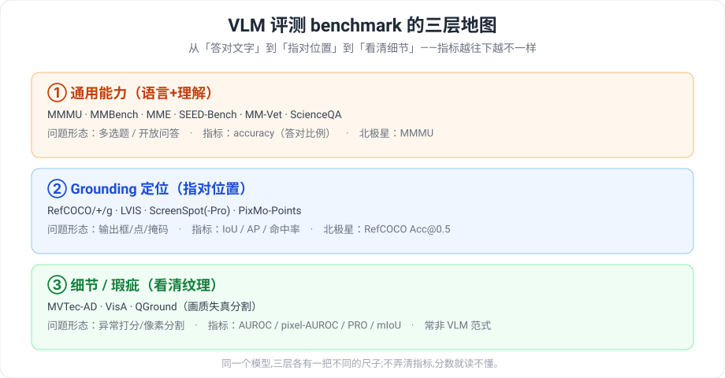
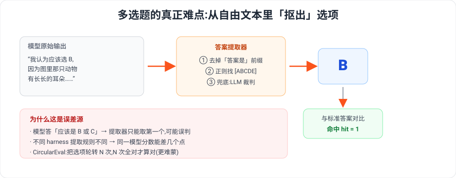
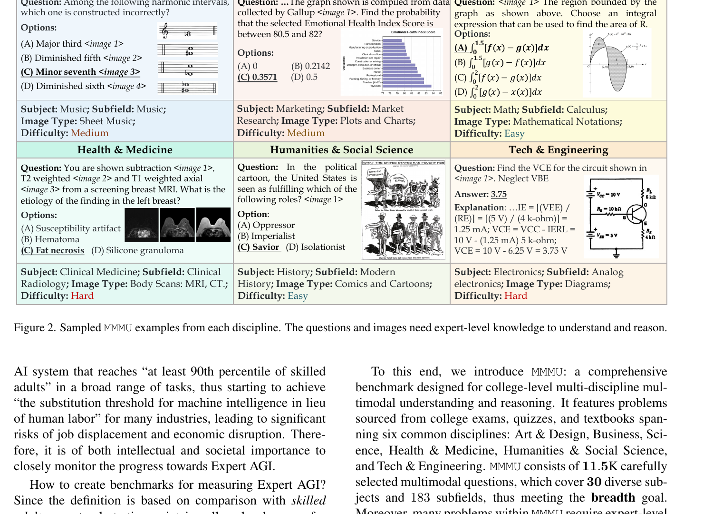
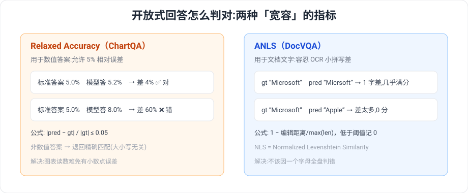
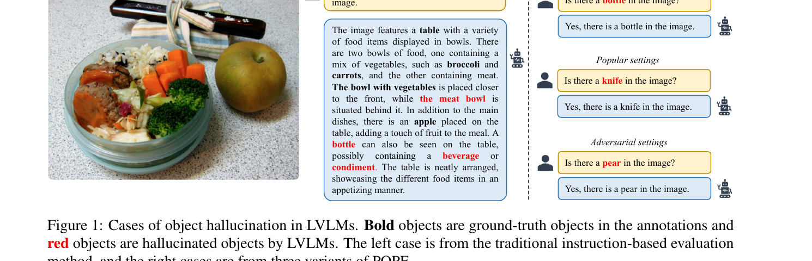
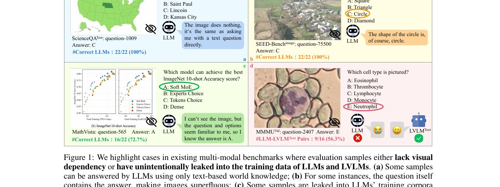
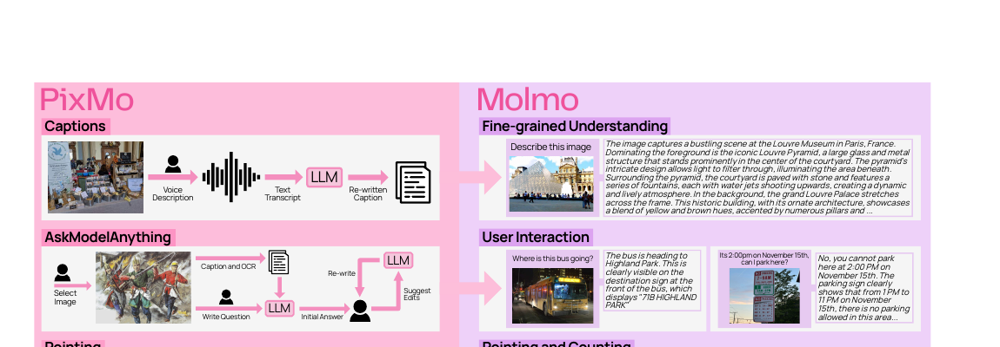
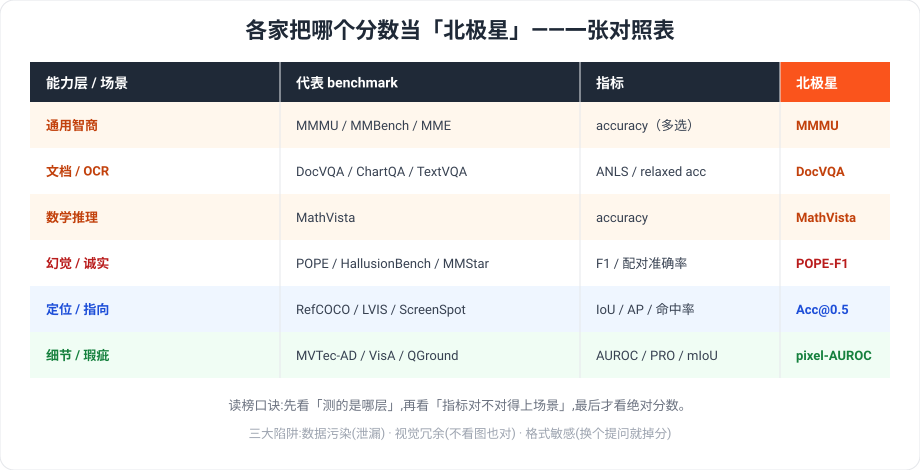
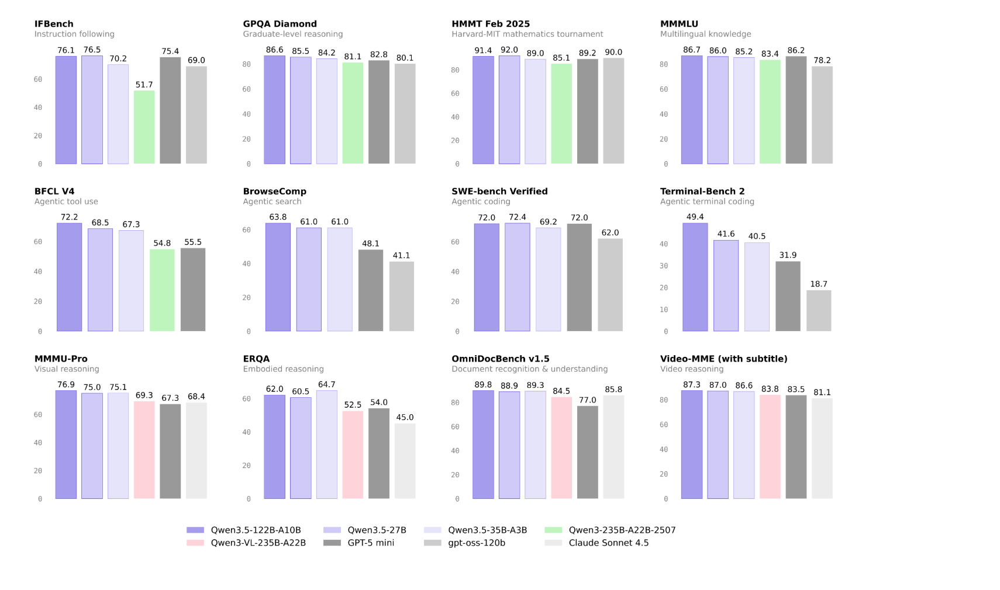

VLM 评测 Benchmark 目录:测什么能力 · 怎么测 · 样题 · 模型如何被打分
这是一份常见 VLM 评测 benchmark 的速查目录。VLM(Vision-Language Model,能看图又能说话的模型)发布时榜单上密密麻麻几十个名字——MMMU、DocVQA、POPE、RefCOCO、MVTec……它们各测一种能力、各用一套判分规则。本文把它们按三层整理成卡片,每个 benchmark 回答五件事:
- 测什么能力 —— 它考 VLM 的哪一面?
- 测试方法 —— 题型是多选、判断、开放问答,还是输出框/点/掩码?
- 测试示例 —— 一道样题长什么样(题型示意)?
- 模型如何被测试 —— 图和问题怎么喂进去、模型生成什么、答案怎么被提取、怎么判分?
- 指标 —— 用什么数衡量,厂商头版常挂哪个?
三层地图:

§1 先讲清所有 benchmark 共享的「模型被测试的通用流水线」;§2–§6 是分层目录;§7 给一张速查对照表 + 读榜 checklist。真实评分代码 verbatim 引自最常用的评测框架 open-compass/VLMEvalKit 与工业异常库 openvinotoolkit/anomalib;所有 arxiv 编号与数字均经核验。
1. 一个 VLM 是怎么被测试的:通用评测流水线
在钻进各个 benchmark 之前,先看清一件所有 benchmark 共享的事——一个 VLM 到底是怎么被「考」的。不管题型是多选还是画框,评测都走同一条五步流水线。
1.1 五步流水线
一个 benchmark 本质是一组带标准答案的样本(图 + 问题 + 答案)。评测就是对每条样本依次做:
① 取样本 (image, question, answer)
→ ② 拼 prompt(把图和问题/选项组织成模型输入)
→ ③ 模型前向生成(VLM 吃图+文,吐一段自由文本)
→ ④ 答案提取(从自由文本里抠出最终答案:选项字母 / 数值 / 坐标 / 掩码)
→ ⑤ 判分(提取结果与标准答案比对,按该 benchmark 的指标算分)

不同 benchmark 的区别,几乎只落在第②步(prompt 怎么拼)、第④步(提取什么:字母?坐标?像素图?)、第⑤步(用什么指标)。第③步「模型前向」对所有 benchmark 都一样:VLM 接收图像 token + 文本 token,自回归地吐出一段自由文本。这也是为什么第④步答案提取如此关键——模型不会乖乖只回一个「B」,它会回一整段话,你得先把答案从话里抠出来。
1.2 一个评测循环的最小骨架
把这条流水线写成可运行的代码,核心不到 20 行。下面以多选题为例(其它题型只是换第④步的提取器和第⑤步的指标):
import re
import numpy as np
# 一个 benchmark = 一组结构化样本;这里每条是 {image, question, options, answer}
def build_prompt(item): # ② 拼 prompt
opts = "\n".join(f"({k}) {v}" for k, v in item["options"].items())
return f"{item['question']}\n{opts}\n请只回答选项字母。"
def extract_choice(text, choices="ABCDE"): # ④ 答案提取
text = re.sub(r"(答案是|the answer is|answer:)", "", text, flags=re.I).strip()
m = re.search(rf"[{choices}]", text) # 抠出第一个选项字母
return m.group(0) if m else "" # 抠不到 → 空串(判错)
def evaluate(model, dataset): # 整条流水线
hits = []
for item in dataset: # ① 遍历样本
prompt = build_prompt(item)
raw = model.generate(item["image"], prompt) # ③ VLM 前向:吃图+文,吐自由文本
pred = extract_choice(raw) # ④ 提取
hits.append(int(pred == item["answer"])) # ⑤ 判分:命中记 1
return float(np.mean(hits)) # accuracy = 命中均值
model.generate(image, prompt) 就是 VLM 的前向接口(把一张图和一段文字喂进去,拿回一段文字)。整个评测就是这个循环套在不同 benchmark 的数据 + 提取器 + 指标上。换成 grounding,第④步 extract_choice 变成「从文本里解析出框坐标」、第⑤步变成「算 IoU」;换成画质分割,第④步变成「输出像素掩码」、第⑤步变成「算 mIoU」。骨架不变。
1.3 被低估的第④步:答案提取与 CircularEval
第④步是分数失真的主要来源。真实评测框架在朴素正则之上叠了很多补丁。下面是 VLMEvalKit 的多选答案提取器:
sources/repos/open-compass-VLMEvalKit/vlmeval/dataset/utils/multiple_choice.py:L585-L612 — 从模型自由文本里正则抠出 ABCDE 选项的答案提取器
def extract_characters_regex(s, choices=['(A)', '(B)', '(C)', '(D)', '(E)']):
if type(s) is dict:
s = ''
s = s.strip()
answer_prefixes = [
'The best answer is',
'The correct answer is',
'The answer is',
'The answer',
'The best option is'
'The correct option is',
'Best answer:'
'Best option:',
]
for answer_prefix in answer_prefixes:
s = s.replace(answer_prefix, '')
if len(s.split()) > 10 and not re.search('[ABCDE]', s):
return ''
matches = re.search(r'[ABCDE]', s)
if matches is None:
for choice in choices:
if s.lower() in choice.lower():
return choice[1]
return ''
return matches[0]
它先删掉「The answer is …」之类套话前缀(免得抓到前缀里的字母),再判断:回答超过 10 个词却找不到 ABCDE 就放弃(返回空串);否则抠第一个选项字母;还兜底匹配「回答正好是某个选项的原文」。规则全失效时上层才调 LLM 当裁判。换一套提取规则,同一个模型的分数就会浮动——这是不同来源分数对不上的常见原因。
提取之后的判分(第⑤步)最基础的形式就是「命中求均值」:
sources/repos/open-compass-VLMEvalKit/vlmeval/dataset/utils/multiple_choice.py:L77-L100 — report_acc:按 split / 能力维度求 hit 均值得到 accuracy
def report_acc(df):
# assert group in [None, 'category', 'l2-category']
res = defaultdict(list)
if 'split' in df:
splits = list(set(df['split']))
res['split'] = splits
else:
df['split'] = ['none'] * len(df)
res['split'] = ['none']
for group in [None, 'l2-category', 'category']:
if group is None:
res['Overall'] = [np.mean(df[df['split'] == sp]['hit']) for sp in res['split']]
elif group not in df:
continue
else:
abilities = list(set(df[group]))
abilities.sort()
for ab in abilities:
ab_name = MMB_abbrs[ab] if ab in MMB_abbrs else ab
sub_df = df[df[group] == ab]
res[ab_name] = [np.mean(sub_df[sub_df['split'] == sp]['hit']) for sp in res['split']]
return pd.DataFrame(res)
hit 列是每题 0/1 的命中,report_acc 对它求 np.mean 就是 accuracy,并顺手按能力维度(category/l2-category)各算一次——这就是为什么 MMBench 这类 benchmark 能给出分维度的细分准确率。
最后一个共享机制:CircularEval(MMBench 提出,§2 会再用到)。四选一靠运气能蒙中 25%,模型还可能有「无脑选某个位置」的偏置。CircularEval 把同一题的选项循环移位问 N 遍(正确答案轮流落在每个位置),N 遍全对才算这题对。它把蒙对概率从 25% 压到约 \(0.25^4\),并让位置偏置无所遁形。后面凡是标「circular」的准确率,都比普通(vanilla)准确率严格。
记住这条流水线,下面每一层的卡片只需要看它在第②④⑤步上有什么不同。
2. 通用能力层:MMMU / MMBench / MME / SEED-Bench
通用能力层的 benchmark 不绑定具体下游任务,目标是用一组覆盖广泛的问题去估计模型「看图 + 推理 + 答题」的综合水平。下面把四个最常被引用的 benchmark 逐个做成卡片:测什么、怎么出题、长什么样、模型怎么被喂入并打分、看哪个指标。
MMMU — 大学级跨学科多模态推理
-
测什么能力:大学考试难度的跨学科理解与推理,要求模型读懂图表/公式/化学结构/乐谱等专业图像并结合学科知识作答,不是日常常识题。
-
测试方法:多选为主(部分填空),共 11.5K 题,横跨 6 大学科(艺术设计 / 商业 / 科学 / 健康医学 / 人文社科 / 技术工程)、30 个科目、183 个子领域,涉及 30 种图像类型(图表、乐谱、化学结构等)。
-
测试示例(题型示意,非数据集原题):
学科:科学 / 化学 图像:一张苯环取代结构式 问题:下图所示分子中,带有 —OH 取代基的碳原子的杂化方式是? A. sp B. sp² C. sp³ D. 无法确定 正确答案:B 这道题在考什么:把专业图像(化学结构式)识别为结构信息,再调用学科知识(杂化轨道)推理——典型的「看专业图 + 用学科知识」复合能力。

图 2.1 MMMU 跨 6 大学科的真实样题。图源:MMMU 论文 (arxiv 2311.16502)。 -
模型如何被测试:每道题把题干文本与一张或多张图像按位置拼成一个多模态 prompt(图像内嵌在题干对应处),并把选项 A/B/C/D 一并附在问题末尾,要求模型输出选项字母。模型生成一段自由文本回答后,评测脚本用规则/正则从回答里提取被选中的选项(匹配字母或选项原文);提取到的选项与标准答案比对,填空题则做答案串匹配。
-
指标:accuracy(答对题数 / 总题数)。厂商发布时通常把 MMMU 总分放在头版;发布当时(2023)GPT-4V 约 56%、Gemini Ultra 约 59%。
MMBench — 中英双语 + 防蒙循环评测
-
测什么能力:沿一棵能力维度树系统覆盖从粗粒度感知(物体存在、属性识别)到细粒度推理(关系、逻辑)的多种细分能力,并同时支持中英双语版本。
-
测试方法:多选题,按能力维度树细分组织;每题用 CircularEval 评测——把同一题的选项循环移位若干次(每次正确答案换到不同字母位),模型必须 N 次全部答对该题才算对,以此压制「靠选项位置或先验蒙对」。
-
测试示例(题型示意,非数据集原题):
能力维度:细粒度推理 / 空间关系 图像:桌上一只猫在笔记本电脑左侧 问题:猫相对于笔记本电脑的位置是? A. 右侧 B. 左侧 C. 上方 D. 下方 正确答案:B CircularEval:同题会再循环移位若干轮(如正确答案轮流出现在 A/C/D 位),四轮都答对才计为该题正确。 这道题在考什么:空间关系判断,且要求结论稳定到不随选项顺序变化。
-
模型如何被测试:图像 + 题干 + 当前轮次的选项排列拼成 prompt,模型生成回答后由脚本提取选项字母;同一题在 CircularEval 下重复多轮、每轮选项顺序不同,逐轮提取并比对,全轮命中才记该题为对。中英双语各自独立跑一遍。
-
指标:accuracy(circular,即循环评测下的准确率)。厂商发布时常用 MMBench(及其中文版)总体准确率作为头版数字。
MME — yes/no 双问 × 14 子任务
-
测什么能力:把综合能力拆成 14 个子任务,分两大组——perception(感知,10 类)与 cognition(认知/推理,4 类),逐类细测。
-
测试方法:判断题(yes/no)。每张图配两个 yes/no 问题(一正一反,正确答案一个 Yes 一个 No),覆盖 14 个子任务。
-
测试示例(题型示意,非数据集原题):
子任务:perception / existence(存在性) 图像:一张街景,画面里有一辆公交车 问题 1:图中是否有一辆公交车?(标准答案:Yes) 问题 2:图中是否有一架飞机?(标准答案:No) 这道题在考什么:同一张图正反两问都要答对,既测「认出存在的物体」也测「不被诱导承认不存在的物体」,杜绝一律答 Yes 蒙分。
-
模型如何被测试:图像 + 单个 yes/no 问题拼成 prompt,模型生成回答后脚本判定其表达为 Yes 还是 No 并与标准答案比对,得到单题 0/1。计分非常规:每类的得分 = acc + acc_plus,其中 acc = 单题正确率 × 100,acc_plus = 「同一张图的两个问题都答对」的比率 × 100;因此每类满分 200。再把 10 个感知类汇总得 perception(上限 2000)、4 个认知类汇总得 cognition(上限 800),总分上限 2800(这是 MME 自定义量纲,不是百分比)。
-
指标:perception 分 / cognition 分 / 总分(均为上述自定义量纲)。厂商发布时头版常用 MME 总分(满分 2800)或 perception 分。
SEED-Bench — 大规模多选 12 维度
-
测什么能力:在 12 个评测维度上覆盖从单图理解到时序推理的多层次能力(单图的场景/实例/属性理解,以及跨帧的动作/时序推理等)。
-
测试方法:大规模多选题,按 12 个维度组织,题量大、可自动判分。
-
测试示例(题型示意,非数据集原题):
评测维度:时序推理(Action Recognition) 输入:一段短视频的若干帧 问题:视频中人物正在做的动作是? A. 倒水 B. 切菜 C. 擦桌子 D. 洗手 正确答案:A 这道题在考什么:跨帧整合视觉信息做时序/动作推理,而非单帧静态识别。
-
模型如何被测试:图像(或若干帧)+ 题干 + 四个选项拼成 prompt,模型生成回答后脚本从中提取所选选项与标准答案比对;由于全为多选,判分完全自动、无需人工。
-
指标:accuracy(各维度准确率及总体准确率)。厂商发布时头版常用 SEED-Bench 总体准确率(或其单图子集 SEED-Bench-Image 的准确率)。
▸ 这一层非常规打分:MME 怎么算分
四个 benchmark 里,只有 MME 不是直接报准确率,而是用「acc + acc_plus、满分 2800」这套自定义量纲。它具体怎么算,看 VLMEvalKit 的实现最清楚:
sources/repos/open-compass-VLMEvalKit/vlmeval/dataset/utils/yorn.py:L50-L92 — MME 计分:每图两问都对才算 acc+,最终 score = acc + acc_plus,再汇总 perception/reasoning
def MME_rating(data_file):
data = load(data_file)
stats = defaultdict(dict)
lt = len(data)
for i in range(lt):
item = data.iloc[i]
category = item['category']
image_path = item['image_path']
score = item['score']
if image_path not in stats[category]:
stats[category][image_path] = []
stats[category][image_path].append(score)
def acc(key, mode='normal'):
res = stats[key]
values = []
for val in res.values():
if mode == 'normal':
values.extend(val)
elif mode == 'plus':
values.append(val[0] * val[1])
return np.mean(values) * 100
scores = {}
for k in stats:
scores[k] = acc(k) + acc(k, 'plus')
super_cates = dict(
perception=[
'OCR', 'artwork', 'celebrity', 'color', 'count', 'existence',
'landmark', 'position', 'posters', 'scene'
],
reasoning=['code_reasoning', 'commonsense_reasoning', 'numerical_calculation', 'text_translation']
)
ret = {}
for sc, cate_list in super_cates.items():
base = 0
for c in cate_list:
base += scores[c]
ret[sc] = base
ret.update(scores)
ret = d2df(ret)
对照上面 MME 卡片说的规则,这段代码逐条落地:
- acc(默认
mode='normal'):把每张图的所有单题 0/1 全部摊平(values.extend(val))取平均再 ×100,就是卡片里的「acc = 单题正确率 × 100」。 - acc_plus(
mode='plus'):对每张图取val[0] * val[1]——两个 yes/no 问题都为 1 才得 1,有一个错就是 0,正是「一图两问都对」。 - 每类得分:
scores[k] = acc(k) + acc(k, 'plus'),精确对应卡片里的score = acc + acc_plus(每类满分 200)。 - super_cates 分组求和:把 10 个感知类(代码里
perception列表)与 4 个推理类(reasoning列表)各自base += scores[c]求和,得到 perception(上限 2000)与 cognition/reasoning(上限 800),两者相加即总分上限 2800。
可见 MME 那个看上去奇怪的「2800 满分」并非凭空设定,而是 14 类 × 每类 200 的累加结果;读厂商榜单上的 MME 分时,记住它是这套量纲、不能当百分比直接和 MMMU/SEED 的 accuracy 横向比。
3. 会读图会算层:DocVQA / ChartQA / TextVQA / AI2D / MathVista
这一层考的不是"图里有什么物体",而是"图里写了什么、画了什么数据,你能不能据此读出文字、对齐版面、做算术与逻辑推理"。它是商用 VLM 对外宣传时最爱挂在头版的能力区——尤其是 OCR / 文档理解——因为它直接对应发票识别、报表解读、合同抽取这类付费场景。本层的评测共同难点在于:答案是开放式自由文本,没有 ABCD 选项,因此判分必须做容差匹配(数值容差或编辑距离),否则一个多余空格、一次 OCR 拼写抖动就会把对的答案判错。

DocVQA — 文档图像问答(发票 / 表单 / 合同)
-
测什么能力:在扫描或拍照的文档图像上读懂版面文字,把问题定位到表单字段、表格单元格、印刷段落并抽取答案。考的是 OCR + 版面理解的联合能力。
-
测试方法:开放式抽取型问答,答案通常是文档里的一小段原文(日期、金额、姓名、字段值)。判分用 ANLS(Average Normalized Levenshtein Similarity,归一化编辑距离相似度):不要求逐字符精确匹配,而是用编辑距离衡量预测与参考答案的接近程度,从而容忍 OCR 带来的小拼写差(如
O/0、漏一个空格)。 -
测试示例(题型示意,非数据集原题):
题型示意,非数据集原题 图描述:一张采购发票扫描件,右上角印有 "Invoice Date: 12/03/2019",底部 "Total Amount Due: $1,420.50"。 问题:What is the total amount due? 参考答案:$1,420.50 考点:在版面中定位"Total Amount Due"字段并抽取其右侧的金额值,容忍 OCR 对货币符号 / 千分位的轻微误读。
-
模型如何被测试:把整张文档图像 + 问题文本一起喂给模型,模型生成一段自由文本回答(没有候选项)。判分时不做精确字符串相等,而是对预测串与参考串计算归一化编辑距离,再换算为相似度并过阈值——拼写抖动不致命,语义错位才致命。
-
指标:ANLS;人类水平约 94.36%。文档理解是商用模型对外评测最常放上头版的一类(OCR / 文档能力是付费场景的直接卖点)。
ChartQA — 图表问答(柱状 / 折线 / 饼图)
-
测什么能力:看懂图表的坐标轴、图例、数据点,并在其上做算术(求和、求差、比例)与逻辑推理(哪个最大、是否超过某阈值)。
-
测试方法:开放式问答,答案既可能是数值也可能是类别名。判分用 relaxed accuracy(松弛准确率):数值答案允许 5% 相对误差(容忍图表数据自动抽取的小偏差),非数值答案仍要求精确匹配。
-
测试示例(题型示意,非数据集原题):
题型示意,非数据集原题 图描述:一张柱状图,2020 年 42,2021 年 58,2022 年 61(单位:百万)。 问题:How much did the value increase from 2020 to 2021? 参考答案:16 考点:读取两根柱子的数值并做减法;判分时预测落在 16 的 ±5% 区间(约 15.2–16.8)即算对。
-
模型如何被测试:把图表图像 + 问题喂入,模型生成自由文本答案。判分先尝试把预测和参考都解析为浮点数:若两者都是数值,按相对误差 ≤ 5% 判对;否则退回大小写无关的精确匹配。没有 ABCD,模型必须自己把数读出来再算。
-
指标:relaxed accuracy;图表读数 + 算术是商用模型展示"会算"能力时常挂头版的一类。
TextVQA — 场景文字问答(招牌 / 包装)
-
测什么能力:读出自然场景照片里的文字(店招、路牌、商品包装、屏幕),并结合视觉上下文回答问题。考的是场景 OCR + 视觉常识的结合。
-
测试方法:开放式简答,答案多为图中出现的词或短语。判分采用 VQA 式的答案匹配(经文本规范化后比对),而非选择题判定;对自由文本答案做容差化的字符串比对。
-
测试示例(题型示意,非数据集原题):
题型示意,非数据集原题 图描述:一张街景照片,店铺招牌上写着 "OPEN 24 HOURS"。 问题:How many hours is the store open? 参考答案:24 考点:在场景中定位招牌文字、读出 "24 HOURS" 并抽取数字,而非只识别"这是一家店"。
-
模型如何被测试:整张场景图 + 问题喂入,模型生成短文本回答。判分先做小写化、去标点等规范化,再与参考答案集合比对——重点是它读没读到图里的字,而不是描述场景。
-
指标:基于答案匹配的准确率;属于 OCR 能力的场景化延伸,常和 DocVQA 一并出现在文档 / OCR 头版分组里。
AI2D — 科学示意图多选理解(生命周期 / 食物链)
-
测什么能力:理解科学教材里的示意图——箭头、标签、流程关系(生命周期、食物链、水循环),并据此回答。考的是图示的结构 / 关系理解,而非读取连续文字。
-
测试方法:多选题(给定若干候选项,选一个正确答案)。判分是选项级别的精确匹配——本层里唯一的"选择题",所以反而是最干净的判分方式,只看选中的选项是否等于正确选项。
-
测试示例(题型示意,非数据集原题):
题型示意,非数据集原题 图描述:一张蝴蝶生命周期示意图,四个阶段用箭头首尾相连:egg → larva → pupa → adult。 问题:Which stage comes immediately after the larva? 选项:(A) egg (B) pupa (C) adult (D) butterfly 参考答案:(B) pupa 考点:沿箭头方向读出阶段间的先后关系,而不是单看哪个标签离 larva 近。
-
模型如何被测试:示意图 + 问题 + 候选项一起喂入,模型输出所选选项(字母或选项文本)。判分做精确匹配——因为有 ABCD,这里不需要数值容差或编辑距离,与本层其余 benchmark 形成对照。
-
指标:多选准确率;它衡量的是结构化图示理解,常和图表 / 文档分到"会读图"大类里。
MathVista — 视觉数学推理(既看懂图又算数)
-
测什么能力:把视觉理解和数学推理拧在一起——先看懂图(几何图形、函数曲线、统计图、表格),再做数学求解。共 6,141 题,覆盖多种图源与题型。
-
测试方法:混合题型(部分多选、部分自由形式数值 / 短答)。自由形式部分需要把模型输出里的最终答案抽取出来,再做容差化比对;多选部分做选项匹配。判分关键在于答案抽取 + 容差,因为模型常把推理过程和最终答案混在一段话里。
-
测试示例(题型示意,非数据集原题):
题型示意,非数据集原题 图描述:一张直角三角形示意图,两直角边标注为 3 和 4。 问题:What is the length of the hypotenuse? 参考答案:5 考点:从图中读出两条直角边的数值,套用勾股定理求斜边;判分时需从模型的长篇推理里抽出 "5" 再比对。
-
模型如何被测试:图像 + 问题喂入,模型生成往往带 CoT 推理的长文本;评测脚本先抽取最终答案(常借助规则或一个 LLM 抽取器),再对数值做容差匹配 / 对多选做选项匹配。没有统一 ABCD 入口,抽取这一步本身就是误差来源。
-
指标:整体准确率(answer-level accuracy)。发布时(2023)GPT-4V 约 49.9%,人类约 60.3%,差距说明"看懂图再算"远难于单独的读图或单独的算术。
▸ 这一层怎么打分:relaxed accuracy 与 ANLS
前面五个 benchmark 里,真正决定一个答案算不算对的,是两段几十行的容差逻辑。先看 ChartQA 的 relaxed accuracy(VLMEvalKit 实现):
sources/repos/open-compass-VLMEvalKit/vlmeval/dataset/utils/vqa_eval.py:L175-L215 — ChartQA 的 relaxed accuracy:数值答案允许 5% 相对误差,非数值仍需精确匹配
def relaxed_correctness(target: str,
prediction: str,
max_relative_change: float = 0.05) -> bool:
"""Calculates relaxed correctness.
The correctness tolerates certain error ratio defined by max_relative_change.
See https://arxiv.org/pdf/2203.10244.pdf, end of section 5.1:
“Following Methani et al. (2020), we use a relaxed accuracy measure for the
numeric answers to allow a minor inaccuracy that may result from the automatic
data extraction process. We consider an answer to be correct if it is within
5% of the gold answer. For non-numeric answers, we still need an exact match
to consider an answer to be correct.”
Args:
target: Target string.
prediction: Predicted string.
max_relative_change: Maximum relative change.
Returns:
Whether the prediction was correct given the specified tolerance.
"""
def _to_float(text: str) -> Optional[float]:
try:
if text.endswith('%'):
# Convert percentages to floats.
return float(text.rstrip('%')) / 100.0
else:
return float(text)
except ValueError:
return None
prediction = str(prediction)
target = str(target)
prediction_float = _to_float(prediction)
target_float = _to_float(target)
if prediction_float is not None and target_float:
relative_change = abs(prediction_float - target_float) / abs(target_float)
return relative_change <= max_relative_change
else:
return prediction.lower() == target.lower()
对照:这段把"5% 容差"翻译成了一行 relative_change <= max_relative_change,其中 max_relative_change 默认 0.05,而 relative_change = abs(prediction_float - target_float) / abs(target_float) 正是相对误差。注意两个分支:只有当预测和参考都能解析成浮点数(prediction_float is not None and target_float)时才走 5% 容差;否则退回 prediction.lower() == target.lower() 的精确匹配——这就是 ChartQA"数值放宽、非数值仍要精确"规则的全部实现。
再看 DocVQA 的 ANLS,核心是编辑距离 + 归一化:
sources/repos/open-compass-VLMEvalKit/vlmeval/dataset/utils/vqa_eval.py:L217-L240 — DocVQA 的 ANLS:用归一化编辑距离容忍 OCR 小拼写差异
def levenshtein_distance(s1, s2):
if len(s1) > len(s2):
s1, s2 = s2, s1
distances = range(len(s1) + 1)
for i2, c2 in enumerate(s2):
distances_ = [i2 + 1]
for i1, c1 in enumerate(s1):
if c1 == c2:
distances_.append(distances[i1])
else:
distances_.append(1 + min((distances[i1], distances[i1 + 1], distances_[-1])))
distances = distances_
return distances[-1]
def anls_compute(groundtruth, prediction):
gt_answer = ' '.join(groundtruth.strip().lower().split())
det_answer = ' '.join(prediction.strip().lower().split())
dist = levenshtein_distance(gt_answer, det_answer)
length = max(len(groundtruth.upper()), len(prediction.upper()))
values = 0.0 if length == 0 else float(dist) / float(length)
return values
对照:这里 levenshtein_distance 是标准编辑距离;anls_compute 先把两串规范化(小写、压缩空白),算出编辑距离 dist,再除以较长串长度得到 values = dist / length。关键别读反:anls_compute 返回的是"归一化编辑距离比例"(越小越像),它不是 ANLS 本身。真正的 ANLS = 1 − values(越大越像),且按惯例还要过一个 0.5 阈值——即 1 − values ≥ 0.5(等价于 values ≤ 0.5)才记为命中,低于阈值的相似度直接归零。这样设计正好容忍 OCR 级别的小拼写差(几处字符出入仍能保持高相似度),却拦住语义不同的答案。两段代码合起来,就是本层"开放式回答如何被公平判分"的工程答案:数值看相对误差,文本看编辑距离,都不做朴素的字符串相等。
4. 幻觉与诚实层:POPE / HallusionBench / MMStar
前三层(基础感知、综合理解、推理)给出的都是「答对率」分数。但一个高分,可能来自模型真的看懂了图,也可能来自:模型根本没看图、靠语言先验蒙对(视觉冗余),或模型把训练时背过的测试题答了出来(数据泄漏),又或者模型张口就来、把图里没有的物体说成有(物体幻觉)。这一层的三个 benchmark 专门做一件事:把「虚高的分数」从「真实的能力」里拆出来。它们不测新能力,而是审计前几层分数的诚实度。
POPE — 物体幻觉的二分类探针
-
测什么能力:模型描述图像时是否会「无中生有」——把图里根本不存在的物体说成存在。专测物体级幻觉(object hallucination)。
-
测试方法:Polling-based Object Probing Evaluation。不让模型自由生成描述,而是抛出大量「图里有 X 吗?」的 yes/no 探测题,X 一半是图中真实存在的物体、一半是不存在的物体。关键在于「不存在物体」的三种负采样策略,难度递增:
- random:随机挑一个图里没有的物体来问;
- popular:挑数据集中高频出现的物体来问(模型容易因先验答「有」);
- adversarial:挑与图中真实物体高频共现的物体来问(例如图里有「桌子」就问「有没有椅子」),最难,直接攻击模型的共现先验。
-
测试示例(题型示意,非数据集原题):
字段 内容 图内容 一张餐桌照片:桌上有一个盘子、一把叉子 问题(adversarial) 「图中有刀吗?」 期望答案 No(图里只有叉子,没有刀) 在考什么 刀与叉/盘子高频共现,模型若靠先验脑补「餐具配套」就会答 Yes → 暴露幻觉 题型示意,非数据集原题。

图 4.1 POPE 真实案例:模型把图中不存在的物体说成存在。图源:POPE 论文 (arxiv 2305.10355)。 -
模型如何被测试:对每张图、每种负采样策略,生成大量 yes/no 探测题轮番发问;收集模型对全部探测题的 Yes/No 回答,把它当成一个二分类任务(「有」=正类)来统计。不依赖自由文本解析,只看 Yes/No,因此评测稳定、可大规模自动化。
-
指标:把 Yes/No 当二分类,算 precision / recall / F1 / accuracy 四个指标。主指标是 F1——因为正负样本设计上各半且模型存在「倾向答 Yes」的系统性偏置,单看 accuracy 会被偏置掩盖,F1 同时约束 precision 与 recall,更能反映「既不漏报也不虚报」。
HallusionBench — 语言幻觉 × 视觉错觉的配对诊断
-
测什么能力:区分并量化两类失败——「语言幻觉」(language hallucination:不看图、凭语言先验就下结论)和「视觉错觉」(visual illusion:看了图却被图本身误导)。它把这两种纠缠在一起的失败模式拆开诊断。
-
测试方法:人工构造,共 346 张图 / 1129 个问题。核心设计是配对:同一个问题会搭配「原图」与「经过编辑/对照的图」,或同一张图搭配正反两问,形成 question-pair。只有当模型在配对的两端都答对,才算这一对通过——单端蒙对不得分,从而堵死「靠先验单边猜」的路。
-
测试示例(题型示意,非数据集原题):
字段 内容 图内容 一张被刻意编辑过的图:常识里「左边那杯水更满」,但图中实际右边更满 配对问题 Q1:「左边的杯子比右边满吗?」 / Q2:「右边的杯子比左边满吗?」 期望答案 Q1: No / Q2: Yes(必须以图为准,不能靠常识) 在考什么 若模型不看图、套用「先问的更可能为真」之类语言先验 → 配对必有一端错;考的是「真看图」而非「猜」 题型示意,非数据集原题。
-
模型如何被测试:逐对发问,记录模型在每一端的对错,再按 question-pair 级与 figure 级聚合成配对准确率(一对全对才计分)。这种配对口径远比单题准确率严格。
-
指标:配对准确率(question-pair accuracy / figure accuracy)。其严格程度可由发布时的数据体现:2023 年发布时,GPT-4V 的 question-pair 准确率仅约 31%——在常规单题 benchmark 上拿高分的顶级模型,一旦上配对口径就大幅滑落,正说明许多「高分」依赖单边先验而非真正的图文对齐。
MMStar — 视觉冗余与数据泄漏的体检
-
测什么能力:不测模型「会不会」,而是体检 benchmark 分数「靠不靠谱」。它揭示两个让分数虚高的系统性问题:视觉冗余(很多题盖住图、只看问题+选项就能答对)和数据泄漏(模型在训练中背过了测试题)。
-
测试方法:先用「无图也能答对」来量化现有 benchmark 的视觉冗余——实测 GeminiPro 在 MMMU 上完全不给图时仍能答对 42.9%,说明近半题目并不真正依赖图像。基于这一发现,MMStar 人工精选出 1500 道「视觉不可或缺」的题:每题都要求必须看图才能作答。同时提出两个量化指标来审计模型与数据。
-
测试示例(题型示意,非数据集原题):
字段 内容 图内容 一张柱状图,显示 A 城降水量高于 B 城 问题 「哪个城市降水量更高?A / B」 期望答案 A(答案只能从图里读出) 在考什么 删去图后题面无任何线索 → 不看图必然只能瞎猜;这类题才算「视觉不可或缺」,反衬出那些「不给图也能蒙对」的冗余题 题型示意,非数据集原题。

图 4.2 MMStar 揭示的视觉冗余/数据泄漏:不看图也能答对。图源:MMStar 论文 (arxiv 2403.20330)。 -
模型如何被测试:核心是对比给图 / 不给图两种条件下的准确率。同一批题,一次正常给图作答,一次盖住图(只留问题+选项)作答,两次准确率之差即为「视觉增益」;此外比较模型在「训练前/纯文本」条件下的异常高分来估计泄漏。
-
指标:
- 视觉必要性(multi-modal gain)= acc(有图) − acc(无图):差值越大,说明题目/模型越真正依赖视觉,是主审计指标;
- 泄漏度(data leakage):衡量模型在不应答对的条件下(如无图、纯文本)异常答对的程度,用以揭示训练集污染。
一句话:POPE 审「有没有幻觉」,HallusionBench 审「是不是真看图、还是靠先验」,MMStar 审「分数本身是不是题目和数据集的虚高」。三者合起来,才能判断前几层的高分是真本事还是水分。
▸ POPE 怎么打分:把 Yes/No 当二分类算 F1
下面是 VLMEvalKit 中 POPE 的计分实现。注意它没有简单地数「答对几道」,而是把每条 Yes/No 回答映射成二分类标签,再算 precision / recall / F1。
sources/repos/open-compass-VLMEvalKit/vlmeval/dataset/utils/yorn.py:L148-L186 — POPE 计分:把 Yes/No 当二分类,算 precision / recall / F1(北极星是 F1)
def POPE_rating(data_file):
def cal_f1_score(y_true, y_pred):
tp = sum((y_true == 1) & (y_pred == 1))
fp = sum((y_true == 0) & (y_pred == 1))
fn = sum((y_true == 1) & (y_pred == 0))
precision = tp / (tp + fp) if (tp + fp) != 0 else 0
recall = tp / (tp + fn) if (tp + fn) != 0 else 0
f1_score = 2 * (precision * recall) / (precision + recall) if (precision + recall) != 0 else 0
return f1_score, precision, recall
data = load(data_file)
data = data.assign(category=data['category'].str.split(',')).explode('category')
data['index'] = range(len(data))
res = dict(split=[], Overall=[], acc=[], precision=[], recall=[])
y_true = np.array([1 if i == 'Yes' else 0 for i in data['answer']])
y_pred = np.array([1 if i == 'Yes' else 0 for i in data['extracted']])
f1_score, precision, recall = cal_f1_score(y_true, y_pred)
res['split'].append('Overall')
res['Overall'].append(f1_score * 100)
res['acc'].append(np.mean(data['score']) * 100)
res['precision'].append(precision * 100)
res['recall'].append(recall * 100)
if 'category' in data:
cates = list(set(data['category']))
cates = [c for c in cates if not pd.isna(c)]
for c in cates:
sub = data[data['category'] == c]
y_true = np.array([1 if i == 'Yes' else 0 for i in sub['answer']])
y_pred = np.array([1 if i == 'Yes' else 0 for i in sub['extracted']])
f1_score, precision, recall = cal_f1_score(y_true, y_pred)
res['split'].append(c)
res['Overall'].append(f1_score * 100)
res['acc'].append(np.mean(sub['score']) * 100)
res['precision'].append(precision * 100)
res['recall'].append(recall * 100)
ret = pd.DataFrame(res)
对照:
y_true来自数据集标注(图里到底有没有该物体),y_pred来自模型的 Yes/No 回答,二者都被映射成1=Yes / 0=No,POPE 由此变成一个标准二分类问题。fp = sum((y_true == 0) & (y_pred == 1))就是幻觉的精确定义:真实标签为「没有」(y_true == 0),模型却答「有」(y_pred == 1)——这一项正是「图里没有却说有」,即物体幻觉的计数。fp 越多,幻觉越严重。res['Overall']存的是f1_score(而不是acc),这从代码层面坐实了主指标是 F1 而非 accuracy。原因:POPE 的正负样本各半且模型常有「偏向答 Yes」的系统性偏置,在这种类别不平衡/有偏置的设定下,accuracy 会被偏置掩盖(全答 Yes 也能拿到约 50% 甚至更高),而 F1 同时惩罚漏报(fn)与虚报(fp),更诚实地反映模型是否真的不产生幻觉。
5. Grounding 定位层:RefCOCO / LVIS / ScreenSpot / PixMo-Points
前几层考的是「把文字答对」:看一张图、读一段题,输出一串文本,再用字符串或选项去对答案。这一层换了一个动作——答案不再是文字,而是位置。模型要么框出一个矩形(bounding box),要么点出一个坐标(point)。判分也随之改变:不再比较字符串,而是比较几何重叠。下面逐个 benchmark 做卡片,看清「输入指代语/指令 → 输出框/点 → 怎么判对」这条链路。
更细的 grounding benchmark 盘点见教程《VLM Grounding 全景》../vlm-grounding-2025/;PixMo 的数据构造细节见 Molmo 精读 ../../papers/molmo-2024/。
RefCOCO / RefCOCO+ / RefCOCOg — 指代表达定位(referring expression grounding)
-
测什么能力:给一句指代某个物体的自然语言(referring expression),模型要在图中框出对应的那个物体。考的是「语言描述 → 唯一目标 → 精确框位」的对齐能力。
-
测试方法:输出形态是一个 bounding box(框)。判定用 IoU 阈值:预测框与标准框的 IoU ≥ 0.5 即算命中,然后对所有样本求命中均值。
-
测试示例(题型示意,非数据集原题):
输入图:一张桌子上放着两个杯子,左红右蓝 指代语:"the blue cup on the right" 期望输出:[x1, y1, x2, y2] = [612, 240, 758, 430] # 蓝杯子的框 判对方式:与标注框算 IoU,≥ 0.5 记为命中(Acc@0.5) -
模型如何被测试:把图像 + 指代语一起喂给模型,prompt 通常要求模型直接吐出坐标(如
[x1,y1,x2,y2],常归一化到 0–1000 或像素值)。评测脚本用正则/解析器从模型输出里抽出四个数,还原成框,再与 ground-truth 框算 IoU,按阈值判命中。 -
指标:Acc@0.5(IoU≥0.5 的命中率均值),头版最常引用;部分报告也给 Acc@0.75 等更严阈值。
LVIS — 长尾词表检测(Large Vocabulary Instance Segmentation)
-
测什么能力:上千个类别的检测/实例数据集,类别分布极不均衡(少数头部类样本极多,大量尾部类样本极少)。考模型在长尾词表下「不只认识常见物体,也能检出稀有类」的覆盖能力。
-
测试方法:输出形态是一组带类别的 bounding box(检测框)。判定用 AP / mAP:按 IoU 阈值判定每个预测框是否为 TP(true positive),画出 precision-recall 曲线,取曲线下面积得 AP,再跨类别平均得 mAP。
-
测试示例(题型示意,非数据集原题):
输入图:厨房场景 任务:检出图中所有属于词表类别的物体 期望输出: {label: "spatula(锅铲,尾部稀有类)", box: [120, 88, 196, 240]} {label: "bowl", box: [300, 410, 520, 600]} ... 判对方式:每个预测框与同类标注框算 IoU,达阈值且类别对 → TP; 按 PR 曲线下面积求 AP,再跨类平均 → mAP -
模型如何被测试:给模型图 + 词表(或开放词表设置),模型输出若干 (类别, 框) 预测。评测把预测按置信度排序,逐个与标注做 IoU 匹配判 TP/FP,累积出每个类的 PR 曲线并积分为 AP,最后跨全部类别(常额外按头/中/尾分组报告)平均成 mAP。
-
指标:AP / mAP(precision-recall 曲线下面积,按 IoU 阈值判 TP 后跨类平均)。
ScreenSpot / ScreenSpot-Pro — GUI/屏幕元素定位
-
测什么能力:给一条操作指令,模型要在屏幕截图里点中对应的界面元素(按钮、图标、菜单项等)。这是 GUI agent 的底层能力——「看懂界面 → 定位可操作控件」。ScreenSpot-Pro 面向更专业/高分辨率的软件界面,难度更高。
-
测试方法:输出形态是一个点坐标(point)。判定用「点命中」:预测点是否落在目标元素的标注框内,落入即命中。
-
测试示例(题型示意,非数据集原题):
输入图:某 App 的设置界面截图 指令:"打开通知设置" 期望输出:point = (x, y) = (884, 312) # 落在"通知"那一项的框内 判对方式:看 (x,y) 是否落入目标元素的标注框 → 落入记命中 -
模型如何被测试:把截图 + 指令喂给模型,要求输出一个坐标(常归一化)。评测解析出 (x, y),取目标元素的标注框,判断点是否在框内;命中数 / 总数即得命中率。
-
指标:点命中率(预测点落在目标元素框内的比例)。

PixMo-Points — pointing 指向评测
-
测什么能力:来自 Molmo(arxiv 2409.17146)的 pointing 评测,模型用点坐标「指出」图中的物体。它考的不是框得多准,而是「能否用一个点准确指向被问到的目标」,贴近人类用手指点东西的交互方式。
-
测试方法:输出形态是点坐标(point,可能是一个或多个点)。判定看预测点是否指中目标(点落在目标对象区域内即算正确)。
-
测试示例(题型示意,非数据集原题):
输入图:一张含多只动物的图 指代语:"point to the dog" 期望输出:point = (x, y) = (430, 660) # 指在狗身上 判对方式:看该点是否落在目标对象区域内 → 落入记正确 -
模型如何被测试:给模型图 + 指向类指令,模型输出点坐标(Molmo 用专门的 pointing 输出格式)。评测解析坐标后,判断点是否命中目标对象,统计命中比例。
-
指标:pointing 命中率(预测点指中目标的比例)。

▸ 怎么打分:IoU 与命中阈值
上面所有「框」类判分都绕不开一个量——IoU(交并比)= 两框交集面积 / 并集面积。下面这段就是它的实现:先求两框相交矩形的左上/右下角,算出交集面积;再用两框面积之和减去交集得到并集;最后相除。
sources/repos/open-compass-VLMEvalKit/vlmeval/dataset/groundingme.py:L39-L56 — IoU:两个框的交集面积 / 并集面积
def compute_iou(box1, box2):
"""Compute Intersection over Union (IoU) of two bounding boxes."""
if box1 == [0, 0, 0, 0]:
return 1 if box2 == [0, 0, 0, 0] else 0
x_left = max(box1[0], box2[0])
y_top = max(box1[1], box2[1])
x_right = min(box1[2], box2[2])
y_bottom = min(box1[3], box2[3])
intersection = max(0, x_right - x_left) * max(0, y_bottom - y_top)
area1 = (box1[2] - box1[0]) * (box1[3] - box1[1])
area2 = (box2[2] - box2[0]) * (box2[3] - box2[1])
union = area1 + area2 - intersection
return intersection / union if union > 0 else 0
有了 IoU,Acc@x 就是「设一个阈值,过线算 1 分,不过算 0 分,再对全集求均值」。下面这段对每个样本取多个候选框里 IoU 最高的那个(best_iou),分别与 0.5 / 0.75 / 0.9 比较得到 acc_50/75/90,最后用 .mean() 把这些 0/1 命中聚合成命中率。
sources/repos/open-compass-VLMEvalKit/vlmeval/dataset/groundingme.py:L146-L175 — Grounding 命中:best_iou ≥ 0.5/0.75/0.9 得 ACC@x,再对全集求均值
ious = [compute_iou(gt_bbox, pred) for pred in pred_candidates]
best_idx = ious.index(max(ious))
best_iou = ious[best_idx]
# Compute metrics
acc_50 = float(best_iou >= 0.5)
acc_75 = float(best_iou >= 0.75)
acc_90 = float(best_iou >= 0.9)
results.append({
'index': item['index'],
'subtask_l1': subtask_l1,
'subtask_l2': subtask_l2,
'iou': best_iou,
'acc_50': acc_50,
'acc_75': acc_75,
'acc_90': acc_90,
})
# Save detailed results
results_df = pd.DataFrame(results)
dump(results_df, result_file)
# Aggregate overall metrics
metrics = {
'IoU': results_df['iou'].mean(),
'ACC@0.5': results_df['acc_50'].mean(),
'ACC@0.75': results_df['acc_75'].mean(),
'ACC@0.9': results_df['acc_90'].mean(),
}
对照着看两段:compute_iou 给出「交 / 并」这一个连续的几何重叠分数;acc_50/75/90 把这个连续分数按阈值二值化成命中,.mean() 再把命中聚合成命中均值。阈值越高越严——Acc@0.9 要求框几乎完全压在标准框上,远比 Acc@0.5 难刷。RefCOCO 头版报的 Acc@0.5,本质就是这条流水线在阈值 0.5 处的那个数;ScreenSpot 的点命中率则是把「点是否落框内」代替了「IoU 是否过阈值」,聚合方式一模一样。
6. 细节 / 瑕疵层:MVTec-AD / VisA / QGround
到这一层,benchmark 的形态彻底变了。前面几层的题目都能归约成「给一道题、读模型的一段答案、判对错」,指标是 accuracy / 命中率这一套。但工业异常与画质瑕疵这类任务,关心的不是「答对了吗」,而是「能不能把异常从正常里区分排序出来」「能不能把缺陷的像素精确圈出来」。于是指标体系换成了 AUROC / PRO / mIoU——这些是排序质量与区域重叠度的度量,与前面的 accuracy 体系不可直接通约:一个模型可以在 VQA 上拿 80% 准确率,但在 MVTec 上的 image-AUROC 跟它的 VQA 分数没有任何换算关系。
更要紧的一点:这一层榜单上刷分的主力大多还不是 VLM,而是专用异常检测模型(PatchCore、PaDiM、EfficientAD 等)。它们不走对话接口,而是吃一张图、吐一个异常分或一张异常热力图。把通用 VLM 拉进来比,往往要专门设计 prompt 或额外训练分割头,接口本身就不对齐。读这一层榜单时务必看清:跑在前列的是不是「VLM」。
工业异常指标的完整全貌可参见教程《VLM 工业质检》../vlm-industrial-2024/;Q-Ground 的方法细节见 Q-Ground 精读。
MVTec-AD — 工业异常检测的黄金基准
-
测什么能力:在「只见过正常样本」的前提下,判断一张工业件图是否有缺陷(图级),并把缺陷区域定位到像素(像素级)。
-
测试方法:任务是无监督异常检测——训练集只给正常样本,测试集才混入划痕、缺失、错位、污染等多种缺陷。共 15 类(10 个物体 + 5 个纹理)。模型/算法对每张图输出一个异常分(用于图级判定),对每个像素输出一个异常分(用于缺陷定位)。
-
测试示例(题型示意,非数据集原题):
题型示意,非数据集原题
- 输入图:一张螺丝(metal nut)的俯拍图,其中一颗螺纹处有一道划痕。
- 期望输出:① 图级异常分 = 一个标量(越高越像异常);② 缺陷掩码 = 一张与原图同尺寸的二值/热力图,划痕处像素为高分,其余为低分。
- 怎么判好坏:图级——所有测试图按异常分排序,看异常图是否排在正常图前面(算 image-AUROC);像素级——把每个像素当一个样本,看缺陷像素的分是否高于背景像素(算 pixel-AUROC),并用 PRO 检查小缺陷有没有被漏掉。

图 6.1 工业缺陷检测样例(MVTec-AD 风格):正常 vs 各类缺陷,需像素级定位。 -
模型如何被测试:对每张测试图算一个图级异常分,把全部测试图按分数排序求 image-AUROC;对每张图的每个像素算异常分,把所有像素汇在一起按分数排序求 pixel-AUROC。主流方法是非对话、非 VLM 接口的专用检测器(吃图吐分/吐热力图),通用 VLM 要接入需额外改造。
-
指标:image-AUROC(图级:是否异常)、pixel-AUROC(像素级:缺陷定位)。
VisA — 更大更难的像素级异常基准
-
测什么能力:与 MVTec 同属工业异常检测,但样本量更大、分辨率更高、缺陷更细微,考验方法在更难分布上的异常排序与定位能力。
-
测试方法:12 类、共 10,821 张高分辨率图,带像素级异常标注。沿用「只给正常样本训练、测试含缺陷」的无监督异常检测设定;输出形态同 MVTec(图级异常分 + 像素级异常图)。
-
测试示例(题型示意,非数据集原题):
题型示意,非数据集原题
- 输入图:一块 PCB 的高分辨率图,某处贴片元件有极小的偏位。
- 期望输出:① 图级异常分;② 像素级异常图,偏位元件处高亮。
- 怎么判好坏:与 MVTec 一致——图级看排序(image-AUROC),像素级把每像素当样本看排序(pixel-AUROC),小缺陷用 PRO 兜底。因图更大、缺陷更小,pixel 级别更吃精度。
-
模型如何被测试:同 MVTec——逐图一个异常分排序算 image-AUROC,逐像素一个异常分排序算 pixel-AUROC。榜单上仍以专用异常检测模型为主,多为非对话接口。
-
指标:image-AUROC、pixel-AUROC(辅以 PRO 保护小缺陷)。
Q-Ground / QGround — 画质失真分割
-
测什么能力:不止判断「图像有没有画质问题」,而要把画质失真(模糊、噪声、压缩伪影等)在图上分割出来,定位到具体区域。
-
测试方法:任务形态是像素级分割——对输入图输出一张失真区域的分割掩码。配套数据集为 QGround-100K。与 MVTec/VisA 的「异常打分排序」不同,这里直接评分割质量。
-
测试示例(题型示意,非数据集原题):
题型示意,非数据集原题
- 输入图:一张局部模糊、其余清晰的照片。
- 期望输出:一张分割掩码,模糊区域标为前景,清晰区域标为背景。
- 怎么判好坏:把预测掩码与人工标注掩码逐像素比对,算交并比(mIoU)——重叠越大分越高。
-
模型如何被测试:模型对每张图输出失真区域的分割掩码,与 ground-truth 掩码计算 IoU,在所有图/类别上取平均得 mIoU。这一任务更贴近分割模型/具备分割头的多模态模型,而非纯对话式 VLM 接口。
-
指标:分割 mIoU。
▸ 怎么打分:image-AUROC
上面反复出现的 AUROC,定义是 ROC 曲线(纵轴 TPR、横轴 FPR)下的面积:它衡量「把异常排在正常前面」的排序能力,与阈值无关——0.5 等于随机猜,1.0 等于完美排序。pixel-AUROC 只是把统计单位从「每张图一个分」换成「每个像素一个分」。下面是 anomalib(Intel/OpenVINO 官方异常检测库)里 image-AUROC 的核心实现:
sources/repos/openvinotoolkit-anomalib/src/anomalib/metrics/auroc.py:L82-L92 — 异常检测的 image-AUROC:先算 ROC 曲线 (fpr,tpr),再取曲线下面积
def compute(self) -> torch.Tensor:
"""First compute ROC curve, then compute area under the curve.
Returns:
torch.Tensor: Value of the AUROC metric
"""
tpr: torch.Tensor
fpr: torch.Tensor
fpr, tpr = self._compute()
return auc(fpr, tpr, reorder=True)
对照来看:_compute() 先吐出 ROC 曲线上的一串 (fpr, tpr) 点,auc(fpr, tpr) 再对这条曲线求积分得到曲线下面积,就是 AUROC。这个 AUROC 类本质是 torchmetrics BinaryROC 的封装——拿到曲线点后求面积。要从 image-AUROC 切到 pixel-AUROC,代码逻辑不变,只是把「每张图一个预测分 + 一个标签」换成「每个像素一个预测分 + 一个标签」喂进来即可。至于 PRO(Per-Region Overlap),它不走这条「全部样本一起排序」的路:它对每个真实缺陷的连通区域单独算覆盖率再求平均,从而避免大缺陷在整体面积上主导分数、保护那些面积虽小却关键的缺陷。
7. 速查对照表 · 怎么读 leaderboard · 什么时候得自建
7.1 一张速查对照表
把前六层收成一张表,看到任意一个 benchmark 名字都能立刻定位它在测什么、用什么判分:
| 能力层 | 代表 benchmark | 题型 / 输出 | 指标 | 头版常用 |
|---|---|---|---|---|
| 通用综合 | MMMU / MMBench / MME / SEED-Bench | 多选 / yes-no | accuracy(MME 用 2800 制) | MMMU |
| 会读图会算 | DocVQA / ChartQA / TextVQA / AI2D / MathVista | 开放问答 / 多选 | ANLS / relaxed acc / accuracy | DocVQA、MathVista |
| 幻觉 / 诚实 | POPE / HallusionBench / MMStar | yes-no / 配对 / 给图vs不给图 | F1 / 配对准确率 / 视觉必要性 | POPE-F1 |
| Grounding 定位 | RefCOCO / LVIS / ScreenSpot / PixMo-Points | 输出框 / 点 | IoU·Acc@0.5 / AP·mAP / 点命中率 | RefCOCO Acc@0.5、ScreenSpot 命中率 |
| 细节 / 瑕疵 | MVTec-AD / VisA / QGround | 异常分排序 / 像素分割 | image-/pixel-AUROC / PRO / mIoU | pixel-AUROC(多为非 VLM 专用模型) |

7.2 怎么读一张 leaderboard(三大陷阱)
看到一张排名密密麻麻的榜单,别先看谁第一,先按 §5 的教训过三道筛:
- 数据污染 / 泄漏:测试题是否可能进过训练语料?进过的话分数就从「考试」退化成「默写背过的答案」。越新、越冷门的 benchmark 越可信。
- 视觉冗余:这列有没有「盖住图也能答对」的对照(如 MMStar)?没有的话,纯靠语言先验可蒙的高分要打折看。形式上:视觉必要性 = acc(有图) − acc(无图)。
- 格式敏感 / 答案提取差异:这分是哪套 harness、哪个答案提取器跑的?(§1 讲过)换一套提取规则同一个模型分数就会浮动——不同 harness 的分数不可直接横比。
还有一条贯穿全文:量纲不统一不能相加。MME 是 2800 制、MMMU 是百分制、AUROC 是 0–1——把它们塞进一个「总分」前必须先各自归一化。
7.3 「头版指标」在代码里是怎么被挑出来的
一个 benchmark 跑完往往同时产出十几个数(总分、各子类、precision/recall…),但榜单上只显示一个。VLMEvalKit 用一个函数从中钦定那个对外汇报的主指标:
sources/repos/open-compass-VLMEvalKit/vlmeval/dataset/image_base.py:L393-L407 — report_primary_metric:发布时只抽出主指标对外汇报
def report_primary_metric(cls, metrics: dict[str, Any] | None) -> dict[str, float | int]:
if not isinstance(metrics, dict) or not metrics:
return {}
matched_keys = []
fallback = _choose_primary_metric_key(metrics)
if fallback is not None:
matched_keys = [fallback]
primary_metrics = {}
for key in matched_keys:
value = metrics.get(key)
if is_number(value):
primary_metrics[str(key)] = to_number(value)
return primary_metrics
_choose_primary_metric_key 按固定优先级(Overall 优于 Acc 优于 Score)从一堆指标里选出一个键,report_primary_metric 只回传它。换句话说:你在榜上看到的那一列,是框架替你做了「该看哪个」的决定,而被它扔掉的其他指标,往往才是暴露短板的地方——所以 §7.2 才强调要主动去看头版之外的诚实/定位维度。
7.4 什么时候你得自建 benchmark
这份目录覆盖的都是已经成熟、被反复刷过的能力。如果你做的是更前沿的方向——比如双向 grounding、多粒度定位、few-shot pointing——会发现几乎找不到对口的公开评测。这类能力目前没有现成 benchmark,需要自建,而自建时同样套用 §1 的四要素:
- 数据:凑齐(图,问题/指令,标准答案)三元组,并主动设计去污染(测试题不进训练)、查视觉必要性(给图 vs 不给图)的对照子集。
- 任务格式:答案是文本、框、点还是掩码?决定第④步提取器。
- 指标:对应选 accuracy / F1 / IoU·mIoU / AUROC。
- 协议:固定 prompt 模板与答案提取规则,否则分数不可复现、不可横比。
给小白的读榜 checklist:① 认能力层(别把不同能力当一个总分);② 认指标与量纲(满分 100 还是 2800?先归一化);③ 认协议(哪套 harness);④ 查视觉冗余;⑤ 查污染/泄漏;⑥ 看一整组而非一个数;⑦ 关心的能力榜上没有对口列 = 该自建的信号。
8. 新一代发布会评分卡:推理 · agentic · 新多模态(2025+)
前七层是 2023–2024 年「VLM 视觉能力」的尺子。但翻开 2025 年起的前沿模型发布卡,会发现榜单换了一批面孔——大量不再是看图答题,而是纯文本推理、agentic(工具 / 搜索 / 编码 / 终端),以及更硬的多模态。下面这张 Qwen3.5 系列的发布对比卡就是典型:

这批 benchmark 与前六层有三处根本不同,读它们前先记住:
- 很多根本不是 VLM,而是 LLM 的推理 / agent 能力(GPQA、HMMT、BFCL、SWE-bench 都不喂图)。它们和 §3 的 MMMU 不在一根能力轴上,不能混进同一张「视觉能力」对照表。
- 判分从「对答案」扩展到「跑环境」:agentic benchmark 不再正则抠选项,而是真的把模型生成的补丁打进仓库跑测试(SWE-bench)、把命令丢进容器看结果(Terminal-Bench)。§1 的第④步「答案提取」被「执行并观察」取代。
- 强调防污染:像 HMMT Feb 2025 这种「刚比完的竞赛题」之所以上卡,正是因为它发布得够新、几乎不可能进训练语料——这是 §7.2 第 1 条「数据泄漏」陷阱的正面解法。
按发布卡的四个自然分组逐个说清。
8.1 纯文本推理与知识:GPQA Diamond / HMMT Feb 2025 / MMMLU
这组不喂图、纯文本;放进 VLM 发布卡是为了证明「底座 LLM 的推理没退化」。
GPQA Diamond — 研究生级「Google 也搜不到」的科学推理
- 测什么:生物 / 物理 / 化学的博士级难题,设计成「非专家即便联网搜 30 分钟也答不对」(故称 google-proof)。
- 怎么测 · 指标:4 选 1 多选,accuracy(随机基线 25%)。Diamond 是最难子集——专家都答对、且多数非专家答错的那 198 题(全集 448)。
- 来源:NYU + Cohere + Anthropic,2023(arxiv 2311.12022)。
- 一句样题:给两条能级的寿命,问能否在光谱上分辨这两条谱线,4 个数值选项里选一个。
HMMT Feb 2025 — 用「刚比完的奥数」防污染
- 测什么:Harvard-MIT 数学竞赛 2025 年 2 月那场的题,奥赛难度。
- 怎么测 · 指标:填最终答案(数值或闭式,不是选择题,也不判证明过程),共 30 题。MathArena(ETH / INSAIT)把它做成 LLM 评测,报 avg@4(每题跑 4 次取平均,不是普通 pass@1)。
- 来源:竞赛本身无 arxiv;评测框架见 MathArena(arxiv 2505.23281)。
- 为什么上卡:发布得极新,几乎不可能被训练集背过——是「未污染推理」的活体探针。
MMMLU — 多语种知识(别和 MMMU 搞混)
- 测什么:MMLU 的 57 学科知识题,人工翻译成多种语言,测跨语言的知识与理解。注意它是纯文本的 MMMLU,和 §3 看图的 MMMU 只差一个字母却是两回事。
- 怎么测 · 指标:4 选 1 多选,accuracy;OpenAI 版覆盖 14 种语言、每语约 1.4 万题。
- 来源:OpenAI,2024,无独立论文,引原始 MMLU(arxiv 2009.03300)。
8.2 指令遵循:IFBench
IFBench — 对「没见过的约束」还守不守规矩
- 测什么:模型能否把「精确遵循指令」泛化到训练时没见过的、可程序化验证的新约束(故意做来戳破模型对老基准 IFEval 的过拟合)。
- 怎么测 · 指标:取 WildChat 真实 prompt,叠上 58 种全新约束类型(每种配一个程序验证器),共 300 条测试 prompt;报 prompt 级 strict / loose accuracy(loose 为头版)。
- 来源:Ai2 + UW,2025(arxiv 2507.02833)。
- 与 IFEval 的关系:IFEval(Google,2023,arxiv 2311.07911,约 500 prompt、25 种约束)是原版,但模型已把它刷到饱和;IFBench 换上 58 种没见过的约束来测泛化,前沿模型因此常掉到约 50%。
- 一句样题:「回答里每个词的首字母必须按字母表顺序依次推进,Z 之后回到 A。」——一个能被脚本逐词验证的硬约束。
8.3 Agentic:BFCL V4 / BrowseComp / SWE-bench Verified / Terminal-Bench 2
这组的共同点:模型不再只「说」,而要「做」——调函数、查网、改代码、敲命令;判分靠执行结果。
BFCL V4 — 函数调用 / 工具使用
- 测什么:给定一组函数签名和一句需求,模型能否吐出正确的函数调用(选对函数、填对参数);V4 进一步扩到 agentic——多轮调用、联网搜索、记忆管理、对 prompt 格式的鲁棒性。
- 怎么测 · 指标:既比对调用的抽象语法树(AST accuracy),也实际执行看返回(executable accuracy),汇总为 Overall Accuracy。
- 来源:UC Berkeley Gorilla 团队,2025,以排行榜形式维护(无独立 arxiv;V4 总题数官方未给统一数字,此处不杜撰)。
BrowseComp — 难找信息的「浏览竞赛」
- 测什么:agent 能不能锲而不舍地上网,把极难检索、需多跳交叉的事实挖出来。
- 怎么测 · 指标:开放式短答,每题从一个冷僻但可核验的答案反向出题;比对参考答案算 accuracy;共 1266 题。
- 来源:OpenAI,2025(arxiv 2504.12516)。注意另有中文版 BrowseComp-ZH(289 题,另一团队,非 OpenAI)。
- 一句样题:「找出这个虚构角色:偶尔打破第四面墙、背景里受过苦行僧帮助、以幽默著称、有部 1960–80 年代播出且不足 50 集的电视剧。」——答案唯一,但要绕好几跳才查得到。
SWE-bench Verified — 真·改 GitHub issue
- 测什么:给一个真实仓库快照 + 一条 issue,模型要产出一个 patch(补丁),让仓库里原本失败的隐藏测试通过。
- 怎么测 · 指标:把补丁打进仓库跑单元测试——原本 FAIL 的要变 PASS(修好了)、原本 PASS 的不能被改成 FAIL(没改坏);指标是 % Resolved(解决率)。
- 来源:SWE-bench(Princeton,ICLR 2024,arxiv 2310.06770);Verified 是 OpenAI 联合人工筛过的 500 题高质量子集(全集 2294 / Lite 300)。
Terminal-Bench 2 — 终端里的 agent
- 测什么:在一个容器化终端里完成真实任务(软件工程、运维、科学计算、安全),考 agent 敲命令、读输出、迭代收敛的端到端能力。
- 怎么测 · 指标:每个任务在 Docker 容器中跑,看是否达成目标;报任务成功率 / 通过率(无正式指标名);v2.0 共 89 个精选任务。
- 来源:Stanford + Laude Institute,v2.0 于 2025 年 11 月发布(暂无 arxiv)。任务如 chess-best-move、pytorch-model-recovery。
8.4 新多模态:MMMU-Pro / ERQA / OmniDocBench v1.5 / Video-MME
这组才是真喂图 / 视频的,但比 §2–§4 的经典 VLM 榜更硬、更抗「不看图也能蒙」。
MMMU-Pro — 把 MMMU 的水分拧干
- 测什么:与 MMMU 同为大学 / 专家级跨 6 学科多模态推理,但用三招硬化:① 删掉「只看文字就能答」的题;② 选项从 4 个扩到最多 10 个(压低蒙对率);③ 加一个 vision-only 设定——把题干和选项渲染进图里,逼模型先 OCR 再推理。
- 怎么测 · 指标:多选,accuracy;共 1730 题。
- 来源:CMU + Waterloo + MMMU 团队,2024(arxiv 2409.02813;原版 MMMU 见 §3,arxiv 2311.16502)。
ERQA — 具身推理
- 测什么:面向机器人的具身 / 物理 / 空间推理——看场景图判断空间关系、轨迹、动作、状态、指向等 7 类。
- 怎么测 · 指标:多选 VQA(常含多图),输出单个字母,accuracy;共 400 题。
- 来源:Google DeepMind,2025,随 Gemini Robotics 技术报告发布(arxiv 2503.20020)。
- 一句样题:一张操作场景叠加了一条运动轨迹,问这条轨迹对应哪个动作(如「抬起」)。
OmniDocBench v1.5 — 文档解析
- 测什么:把真实 PDF 页端到端解析成结构化输出——正文、表格、公式、阅读顺序全要还原(§3 的 DocVQA 只问一个字段,这里要还原整页)。
- 怎么测 · 指标:分组件判分——正文用归一化编辑距离,表格用 TEDS,公式用 CDM,阅读顺序用编辑距离;v1.5 共 1355 页(双语再平衡、加了 374 页公式密集页)。
- 来源:OpenDataLab / 上海 AI Lab,CVPR 2025(arxiv 2412.07626)。
Video-MME(with subtitle)— 视频理解
- 测什么:跨**短(<2min)/ 中(4–15min)/ 长(30–60min)**时长、6 大领域的视频理解。
- 怎么测 · 指标:4 选 1 多选,accuracy(按时长分别报 + 总分);共 900 段视频(约 254 小时)、2700 题。
- 「with subtitle」:同一套题有两条赛道——「w/o subs」只给抽帧,「w subs」额外把视频字幕作为文本上下文喂进去;给字幕通常显著涨点(长视频可达 +9%)。这也是为什么发布卡上要标注「with subtitle」——换条赛道分数就不可比。
- 来源:Chaoyou Fu 等,2024(arxiv 2405.21075)。
▸ agentic 怎么打分:SWE-bench 跑隐藏测试看 resolve rate
这一节的 benchmark 里,最能体现「判分从『对答案』变成『跑环境』」的是 SWE-bench。它不正则抠任何东西,而是把补丁打进仓库、跑两组测试,再判这道题算不算「解决」。核心逻辑就这二十几行:
sources/repos/princeton-nlp-SWE-bench/swebench/harness/grading.py:L194-L232 — SWE-bench 解决判定:FAIL_TO_PASS 全过 且 PASS_TO_PASS 全保持,才算 resolved
def compute_fail_to_pass(report: dict[str, dict[str, Any]]) -> float:
"""
Compute fail-to-pass metric. Accepts single report as argument.
"""
total = len(report[FAIL_TO_PASS]["success"]) + len(report[FAIL_TO_PASS]["failure"])
if total == 0:
return 1
return len(report[FAIL_TO_PASS]["success"]) / total
def compute_pass_to_pass(report: dict[str, dict[str, Any]]) -> float:
"""
Compute pass-to-pass metric. Accepts single report as argument.
"""
total = len(report[PASS_TO_PASS]["success"]) + len(report[PASS_TO_PASS]["failure"])
if total == 0:
# TODO: Don't factor in p2p metrics
return 1
return len(report[PASS_TO_PASS]["success"]) / total
def get_resolution_status(report: dict[str, dict[str, Any]]) -> str:
"""
Determine resolved status of an evaluation instance
Criteria:
- If fail-to-pass (Resolution) = 1 and pass-to-pass (Maintenance) = 1 -> FULL
- If (fail-to-pass (Resolution) < 1 and > 0) and pass-to-pass (Maintenance) = 1 -> PARTIAL
- Otherwise -> NO
"""
f2p = compute_fail_to_pass(report)
p2p = compute_pass_to_pass(report)
if f2p == 1 and p2p == 1:
return ResolvedStatus.FULL.value
elif f2p < 1 and f2p > 0 and p2p == 1:
return ResolvedStatus.PARTIAL.value
else:
return ResolvedStatus.NO.value
对照来看:
compute_fail_to_pass算的是「原本失败、现在被补丁修好的测试」占比(success / (success+failure)),回答「真把 bug 修好了吗」。compute_pass_to_pass算的是「原本就通过、补丁没把它改坏的测试」占比,回答「修的过程有没有伤到别处」,即回归测试。get_resolution_status把两者收成一个三档结论:只有f2p == 1且p2p == 1(该修的全修好、该保的全没坏)才记 FULL;修好一部分记 PARTIAL;否则 NO。- 榜单上的 % Resolved,就是把全部 500 个实例里判为 FULL 的比例求出来——没有任何字符串匹配、没有 LLM 裁判,判分权完全交给仓库自带的测试。这正是 agentic 评测和前七层最深的分野:对错由「世界(代码能不能跑)」裁决,而非由「答案串比对」裁决。
8.5 这张卡和前七层有什么不同
把新老两代放一起,差异可收成三句话:
- 能力轴变多了。§2–§6 几乎都在「看图」这一根轴上分层;发布卡则把纯文本推理、agentic、多模态三根轴并排——所以同一张卡上 GPQA(不看图)和 MMMU-Pro(看图)并列,绝不能加成一个总分(又一次 §7.2 的「量纲 / 能力不可混加」)。
- 判分机制升级。从「正则抠答案 + 容差匹配」(§1、§3)走到「执行并观察」:跑测试(SWE-bench)、跑容器(Terminal-Bench)、跑验证器(IFBench)、联网核验(BrowseComp)。第④步不再是提取,而是运行。
- 防污染成了一等公民。HMMT Feb 2025 用「刚发布」对抗泄漏,MMMU-Pro 用「渲染进图 + 加选项」对抗蒙猜,IFBench 用「全新约束」对抗过拟合——它们本质都在落地 §7.2 的三道筛。
所以读 2025 之后的发布卡,§7.3 的老教训依然成立、且更要紧:先认这一列在哪根能力轴上,再认它判分是「对答案」还是「跑环境」,最后才比数字。一张把 GPQA、SWE-bench、Video-MME 并排的卡,本身就是在说「我这代模型推理、动手、看图三条腿都想要」——而每条腿该用哪把尺子,前八节已经给全了。
参考文献与数据集
通用能力 benchmark
- MMMU — A Massive Multi-discipline Multimodal Understanding and Reasoning Benchmark for Expert AGI. arxiv 2311.16502 (CVPR 2024)
- MMBench — Is Your Multi-modal Model an All-around Player? arxiv 2307.06281
- MME — A Comprehensive Evaluation Benchmark for Multimodal Large Language Models. arxiv 2306.13394
- SEED-Bench — Benchmarking Multimodal LLMs with Generative Comprehension. arxiv 2307.16125
- MM-Vet — Evaluating Large Multimodal Models for Integrated Capabilities. arxiv 2308.02490
会读图会算 / VQA
- ChartQA — A Benchmark for Question Answering about Charts. arxiv 2203.10244
- DocVQA — A Dataset for VQA on Document Images. arxiv 2007.00398
- TextVQA — Towards VQA Models That Can Read. arxiv 1904.08920
- AI2D — A Diagram Is Worth A Dozen Images. arxiv 1603.07396
- MathVista — Evaluating Mathematical Reasoning of Foundation Models in Visual Contexts. arxiv 2310.02255 (ICLR 2024)
幻觉 / 诚实
- POPE — Evaluating Object Hallucination in Large Vision-Language Models. arxiv 2305.10355 (EMNLP 2023)
- HallusionBench — An Advanced Diagnostic Suite for Entangled Language Hallucination and Visual Illusion. arxiv 2310.14566 (CVPR 2024)
- MMStar — Are We on the Right Way for Evaluating Large Vision-Language Models? arxiv 2403.20330 (NeurIPS 2024)
Grounding 定位
- Molmo & PixMo(PixMo-Points pointing). arxiv 2409.17146;仓库精读 molmo-2024
- 更细的 grounding benchmark 盘点见教程 VLM Grounding 全景 §8(覆盖 RefCOCO / LVIS / ScreenSpot-Pro 等 18+)
细节 / 瑕疵
- MVTec-AD — A Comprehensive Real-World Dataset for Unsupervised Anomaly Detection (CVPR 2019)
- VisA — SPot-the-Difference Self-Supervised Pre-training for Anomaly Detection. arxiv 2207.14315
- Q-Ground — Image Quality Grounding with Large Multi-modality Models. arxiv 2407.17035 (ACM MM 2024 Oral);仓库精读 q-ground-2024;工业异常教程 VLM 工业质检
新一代发布卡 benchmark(2025+)
- GPQA — A Graduate-Level Google-Proof Q&A Benchmark. arxiv 2311.12022(Diamond 为 198 题最难子集)
- HMMT Feb 2025 — 竞赛本身无 arxiv;LLM 评测口径见 MathArena. arxiv 2505.23281
- MMMLU — OpenAI 多语种 MMLU(无独立论文),原始 MMLU arxiv 2009.03300
- IFBench — 指令遵循对未见约束的泛化(Ai2 + UW). arxiv 2507.02833;原版 IFEval arxiv 2311.07911
- BFCL — Berkeley Function-Calling Leaderboard(以排行榜维护,无独立 arxiv)— gorilla.cs.berkeley.edu/leaderboard
- BrowseComp — A Simple Yet Challenging Benchmark for Browsing Agents(OpenAI). arxiv 2504.12516
- SWE-bench — Can Language Models Resolve Real-World GitHub Issues? arxiv 2310.06770(ICLR 2024);Verified 子集由 OpenAI 联合人工筛选;判分代码引用 github.com/princeton-nlp/SWE-bench
- Terminal-Bench — 容器化终端 agent 基准(Stanford + Laude Institute,v2.0 2025-11,暂无 arxiv)— tbench.ai
- MMMU-Pro — A More Robust Multi-discipline Multimodal Understanding Benchmark. arxiv 2409.02813(ACL 2025)
- ERQA — Embodied Reasoning QA,随 Gemini Robotics 技术报告发布. arxiv 2503.20020
- OmniDocBench — Benchmarking Diverse PDF Document Parsing. arxiv 2412.07626(CVPR 2025;v1.5 为数据集更新)
- Video-MME — The First-Ever Comprehensive Evaluation of MLLMs in Video Analysis. arxiv 2405.21075(CVPR 2025)
评测框架与综述
- VLMEvalKit(评分代码引用脊柱)— github.com/open-compass/VLMEvalKit
- lmms-eval — github.com/EvolvingLMMs-Lab/lmms-eval
- anomalib(AUROC 评分代码引用)— github.com/openvinotoolkit/anomalib
- A Survey on Benchmarks of Multimodal Large Language Models. arxiv 2408.08632
- OpenVLM Leaderboard — huggingface.co/spaces/opencompass/open_vlm_leaderboard
讨论 / Comments
评论托管在本仓库的 GitHub Discussions, 需 GitHub 账号。